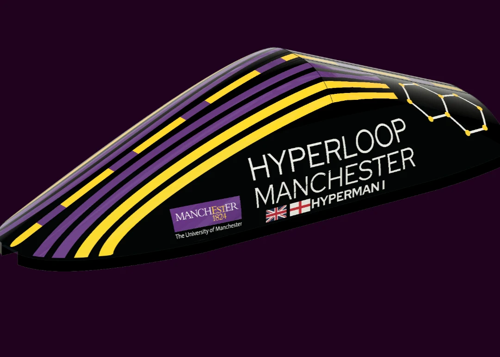

01 / Team project · Embedded systems
Hyperloop Manchester
Developed STM32 subsystems for sensing, telemetry and operator feedback, connecting electronics through CAN and UART with a Raspberry Pi dashboard.
Focus: subsystem integration, communications and test.